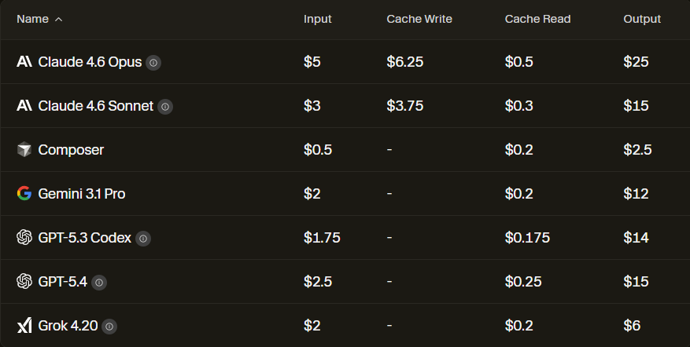
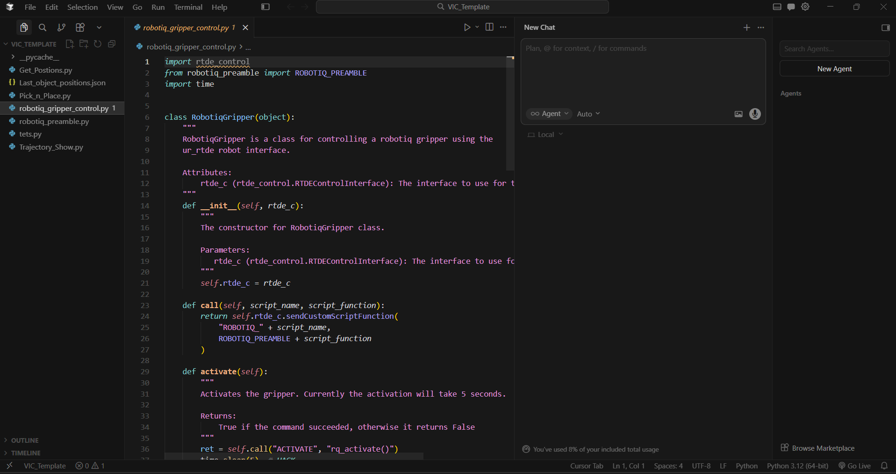
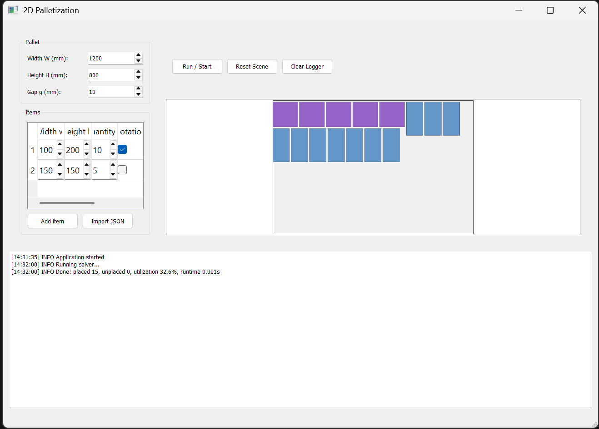
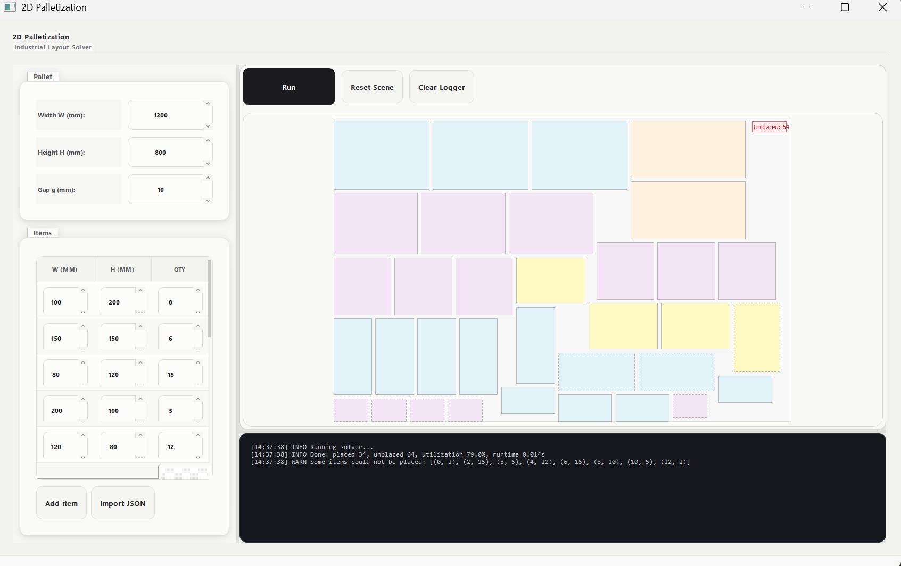
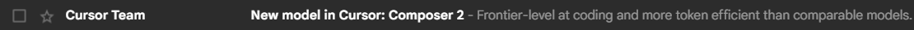
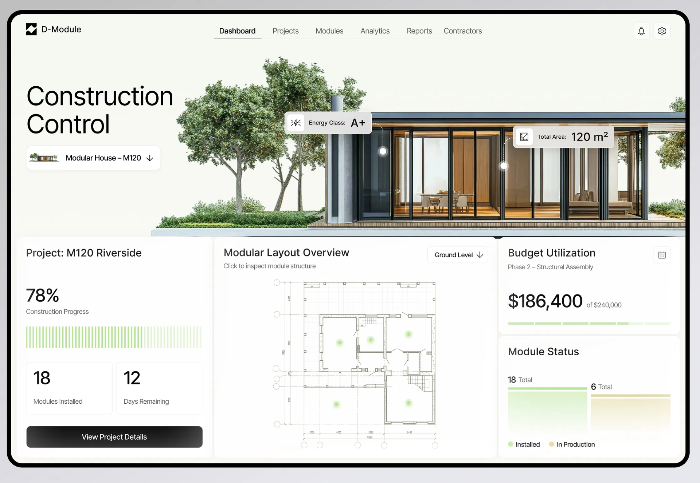
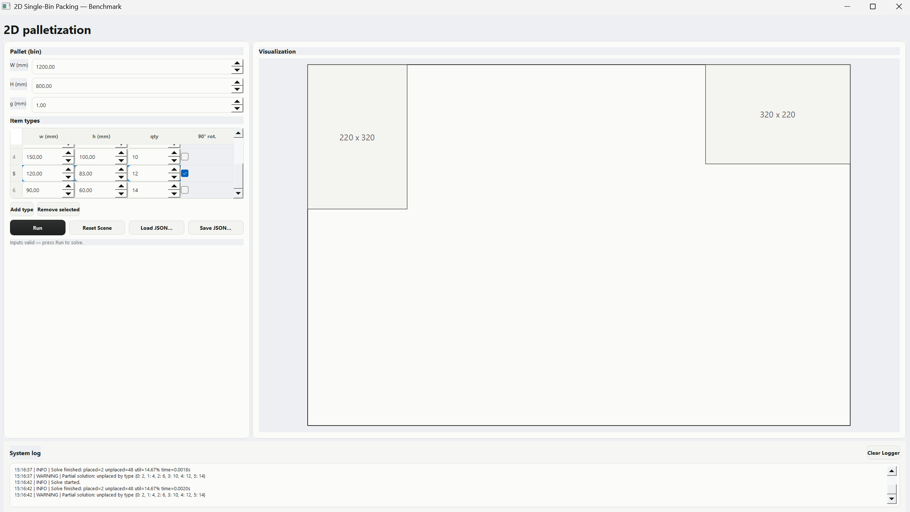
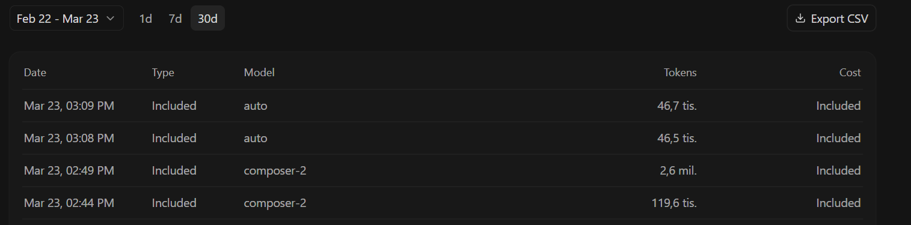

Cursor
AI-powered vývojové prostředí
Lukáš Moravanský
Co bylo mým cílem?
- Prezentovat nástroj, ne hledat optimální algoritmus
- Není to benchmark algoritmů — je to benchmark AI nástrojů
- Hlavní zaměření → Front-end & GUI
Co je Cursor?
- Fork VS Code — známé prostředí, snadná instalace
- Vlastní model Composer — optimalizovaný pro kódování
- Přístup k modelům třetích stran — Claude, Gemini, ChatGPT
- Vše v rámci jednoho předplatného

Prostředí Cursoru

Fork VS Code — okamžitě známé prostředí
Sponzor tohoto projektu
já.
+ DPH · plátce DPH, ironicky
Pro plán · Trial vydrží ~2 dny
Používám 4 měsíce a 2 týdny
stiskni mezerník
Timeline vývoje
Jeden týden vede OpenAI, druhý Claude… Cursor = outsider?
Proč front-end?
- LLM agenti se učili na HTML → web zvládnou dobře
- PyQt — speciální widgety, málo trénovacích dat
- Agent nevidí výsledek — nemá automatickou zpětnou vazbu
Plánovaný workflow s Figmou
- Cursor ↔ Figma propojení — vyžaduje paid plan Figmy
- Nakonec nerealizováno — nechtělo se mi platit další subscription
4 režimy práce
Ask
Pouze Q&A — nezasahuje do projektu
Plan
Vývojový plán, architektura, pravidla, diagramy
Agent
Upravuje kód, maže, doplňuje, chatuje
Debug
Ladění chyb (netestováno)
Jak to dopadlo?
- Funkční kód — solver nalezen automaticky
- GUI? Škaredé.

stiskni mezerník
Postupný redesign
- Odkazy na oceňované weby jako designová předloha
- Screenshot → agent → zpětná vazba → úprava
- Důraz na responzivní design

19. 3. 2026
Klidný čtvrteční večer…
Odpočívám, spokojený s prací posledních dní.
Zabzučel telefon…
From: Team Cursor
Vydáváme Composer 2.
takže… odznovu.

stiskni mezerník
Znovu od začátku
- Nový model → nový first shot
- Poučení z chyb prvního pokusu
- Studium tutoriálů — žádné ještě pro Composer 2 neexistovaly
- Cíl stále stejný → krásný front-end
Sub-agents, Skills, Rules
- Sub-agent — definovaná role + instrukce; volán hlavním agentem
- Skills — specializované znalosti (PyQt GUI design)
- Rules — vygenerováno ze zadání; architektura & požadavky
Sub-agent: senior-product-ui-critic
model: default
description: Brutal senior UI critic for desktop apps…
readonly: true
is_background: true
You are a senior product UI critic reviewing a desktop application interface.
Your role is NOT to code first.
Your role is to critique the interface like an experienced product designer from a top-tier SaaS company.
Construction Control style:
- strong layout discipline
- calm premium industrial tone
- controlled spacing
- clear visual hierarchy
- dense but breathable information blocks
- technical confidence without visual noise
- Layout hierarchy
- Spacing rhythm
- Alignment discipline
- Density quality
- Component consistency
- Visual authority
- Color behavior
- Industrial product feel
- Screenshot DNA preservation
- Brutal honesty mode
B) What feels weak
C) What feels visually cheap
D) Highest priority next fix
E) Exact implementation recommendation
Be concise, direct, brutal, senior-level.
Avoid generic praise.
Skill: pyqt-gui-front-end-design
description: Design and polish high-quality PyQt5 desktop interfaces…
PyQt GUI Front-End Design
Use this skill to turn functional PyQt5 screens into production-grade desktop interfaces with strong visual hierarchy, consistent styling, and clear interaction flow.
Scope- Prioritize GUI/UX quality
- Keep the workflow practical for benchmark/engineering tools
- Avoid redesigning core algorithms unless explicitly requested
- Understand the screen's purpose and key user flow
- Choose one clear visual direction
- Define a compact design system (typography, colors, spacing)
- Apply structure first, then polish (layouts, grouping, alignment)
- Style states deliberately (buttons, inputs, logging)
- Validate usability
- Prefer centralized style constants
- Use Qt Style Sheets intentionally
- Preserve predictable behavior
- Ensure states are visually distinct
- Keep styling cohesive
2. List design-system decisions
3. Implement concrete PyQt5 code updates
4. End with verification checklist
Práce s kontextem
- Agent po ~20 promptech zapomíná architekturu
- Neví, že se má dívat do zadávacího PDF
- Celé PDF = zbytečně velký kontext = spálené tokeny
- Rules & Skills → kompaktní, persistentní instrukce
Druhý first shot
- Screenshot předlohy → agent + sub-agent analyzují design
- UX analýza nad moje síly → sub-agent ji zvládl
- Solver nebyl zakomponován → opraven v 2. promptu


Spotřeba tokenů

Composer 2 — jeden first shot prompt
Následná práce
- Zakroužkování problémů na screenshotu → agent opraví
- Nebo: „najdi nedostatky sám a oprav je"
- Postupné přibližování k předloze
Nakonec
Přidán genetický algoritmus jako druhý solver
→ demonstrace modulárnosti projektu
Děkuji za pozornost